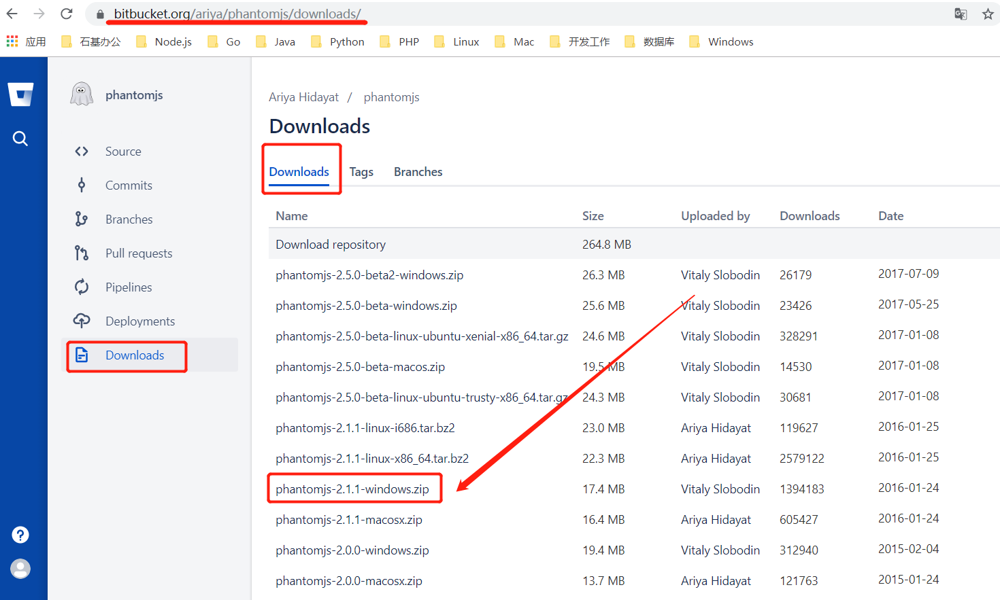

GitBookl转成PDF
需要下载两个插件 1、phantomjs；2、calibre
1、下载相关插件
下载phantomjs : https://bitbucket.org/ariya/phantomjs/downloads/

下载calibre: https://calibre-ebook.com/download_windows
2、安装插件
1、phantomjs只需解压，并将解压后的目录添加到环境变量
2、运行calibre安装程序，并将安装目录添加到环境变量
3、用npm全局安装gitbook-pdf
$ npm install gitbook-pdf -g3、生成PDF文件
切换到你之前自己写的电子书文档目录，执行如下命令：
$ gitbook pdf ./pdffilename